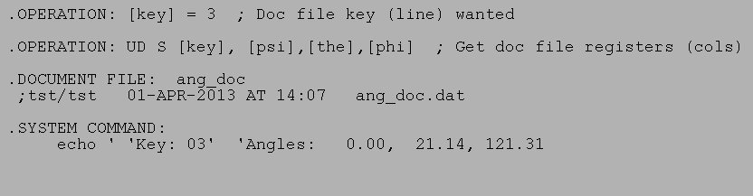

| .OPERATION: | UD S [key], [psi],[the],[phi] | ; Unsave set of registers from doc file |
| .DOCUMENT FILE: | sav_ang_doc | ; Doc file (input) |
| . | ||
| .OPERATION: | SYS | ; Echo angles |
| .SYSTEM COMMAND: | echo ' 'Key: {**[key]}' 'Angles: {%f6.2%[psi]}, {%f6.2%[the]}, {%f6.2%[phi]} | |
| . | ||
| .OPERATION: | UD E | ; End this doc file use |
| INPUT DOC FILE |
|---|
|
| sav_ang_doc |
| RESULTS FILE |
|---|
|  |
| uds_resu |